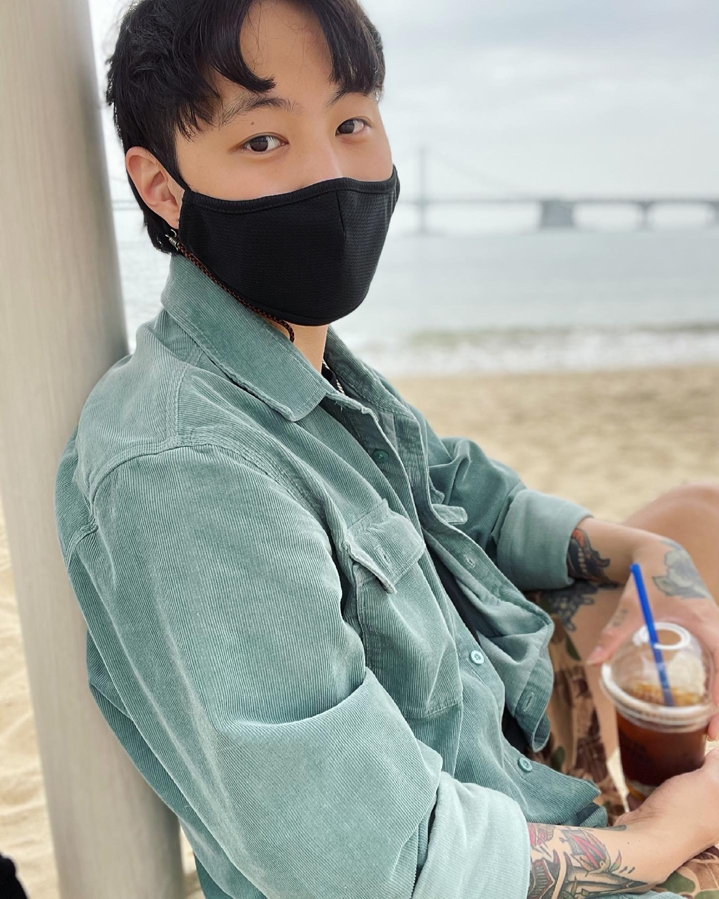

레이킴이 ‘아레나’ 화보를 공개해 눈길을 끌고 있다. 이번 화보에서 레이킴은 선과 악이 공존하는 다채로운 페이스를 그림자와 반사 오브제를 활용한 이미지는 물론 잔상이 남는 컬러 이미지로 연출하며 묵직한 연기 내공 만큼 포스 넘치는 매력을 선보였다. 화보 촬영이 끝나고 이어진 인터뷰에서 레이킴은 최근 종영한 KBS 2TV 월화드라마 ‘7월의 청춘’에서 소름유발자로 활약했던 것에 대해 “저는 그렇게 못된 사람이 아니 에요. 화가 나도 빨리 풀리는 편이고, 뒤에서 주도면밀하게 조종할 정도로 치밀하지도 않고요” 라며 인기남 캐릭터와의 다른 점을 전했다.
dls